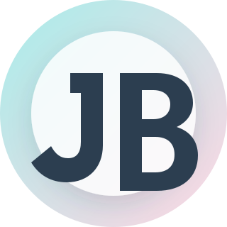

AI 이야기
AI 활용, 도구 리뷰, 기술 실험 기록
0개 글 최근 글 준비 중 더 보기
AI 활용, 웹 개발, 자동화를 직접 시도하고 결과를 남깁니다.
완성된 작업뿐 아니라 시행착오와 배운 점까지 솔직하게 기록합니다.
SELECTED ARCHIVE / 2026
AI 활용, 도구 리뷰, 기술 실험 기록
0개 글 최근 글 준비 중 더 보기직접 만든 프로젝트와 작업물
0개 글 최근 글 준비 중 더 보기목표, 회고, 방향성에 대한 기록
0개 글 최근 글 준비 중 더 보기학습 기록, 개발 메모, 문제 해결 노트
0개 글 최근 글 준비 중 더 보기